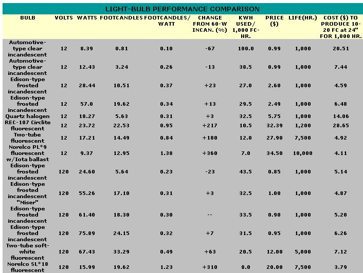

While we were working on MOTHER N0. 90's article about living on low-voltage electricity (see page 132 of that issue), a couple of staff members became curious about the efficiency claims being made for different sorts of lighting devices. Are fluorescent bulbs two . . . or three . . . or x number of times more efficient than incandescent ones? Do 12-volt lamps really use power more effectively than 120-volt models?
To determine the comparative candlepower of various light bulbs per unit of electricity consumed, we set up a simple experiment in MOTHER's photo lab. We closed an area off with black paper, thus preventing light reflection, and then measured the brightness of a variety of bulbs, using two highly sensitive photographic light meters. At the same time, with a pair of digital multimeters we monitored the power being consumed by each bulb.
By averaging the readings from the two light meters (which, incidentally, varied by no more than two footcandles) we were able to come up with an accurate assessment of the output of each bulb in the range for which the light meters are sensitive. This reading doesn't include the full range of visible light, but it does emphasize the wavelengths between those given off by an incandescent bulb and those of sunlight. The measurement also ignores the fact that fluorescent bulbs don't produce equally at all wavelengths. Fluorescent units have gaps in their outputs-hence, it's said that they don't emit a continuous spectrum-which could affect their measured candlepowers. Even so, the following chart should give you a pretty good idea of how much useful light you get for your money from different bulbs.
The first nine columns of the chart are pretty straightforward, but the last one bears a bit of explanation. First, to figure the economy of a particular bulb, it's necessary to consider how much the unit costs. In addition, the fact that one light bulb is more efficient than another may not mean that it uses less electricity in actual practice.
Bulbs have particular footcandle outputs that may be too weak or too powerful to properly illuminate a particular task. Of course, it's very difficult to say exactly how much light a person will need at a given time . . . because different people prefer different levels of illumination and because different tasks require different amounts of light. Therefore, we've picked a range 10 to 20 footcandles at 24 inches that many people would find satisfactory for reading this magazine at a distance of between two and four feet from the bulb. If a particular bulb is not strong enough to provide this amount of light, two (or more) are required; the costs, both for buying the units and for providing the energy (at 7 cents/kwh), are included. If another bulb produces more than the required amount of light, the excess is considered to be wasted. The important lesson to be learned here is that when it comes to saving energy, tailoring your lighting to suit your needs is at least as important as is picking the most efficient bulb.
|
 |
|
|